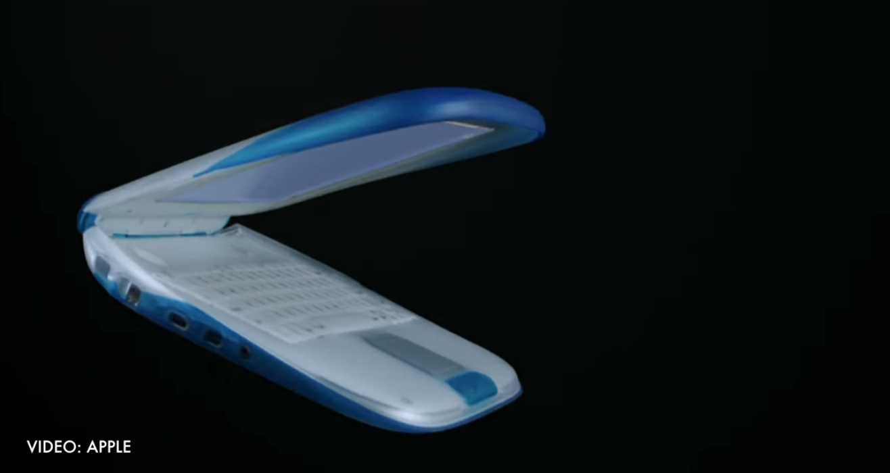
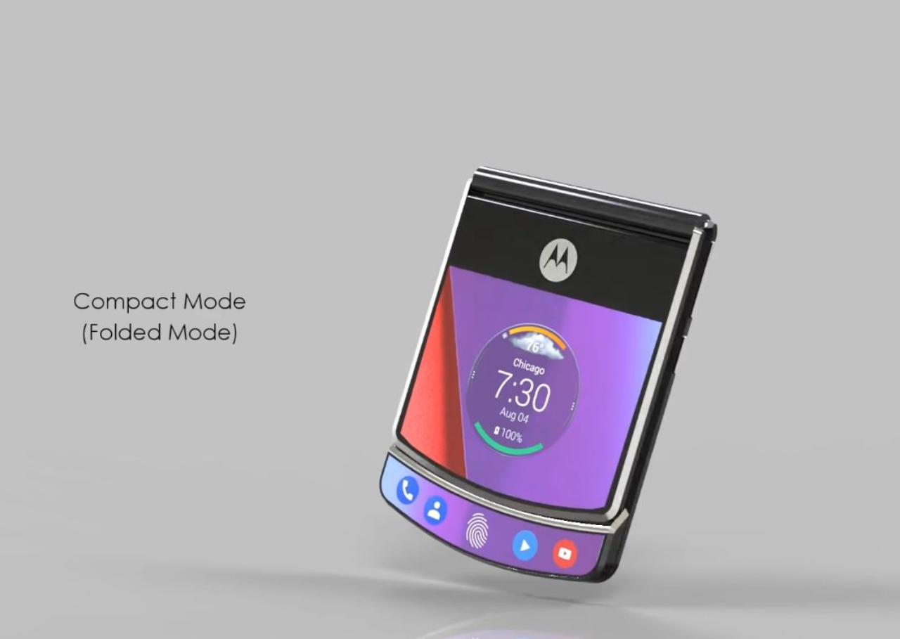

Con người chúng ta thường có những ham muốn không bao giờ kết cho những thay đổi. Thật vậy, chúng ta sợ phải đối mặt với sự nhàm chán. Như bản thân mình, mình sợ vãi “mật” khi biết rằng phải đối mặt với một công việc nào đó lặp đi lặp lại mà không thấy ngày mai. Thế nên khi mà trên các phương tiện truyền thông đưa tin về một “gimmick” (trong tiếng Anh nghĩa là ‘some thing that is not serious or real value that is used to attract people’s attention or interest temporarily, especially to make them buy something’, trong tiếng mẹ đẻ của chúng ta là một dạng thông tin quảng cáo làm quá, nâng “bi” về tính năng đột phá nào đó của công nghệ này để người ta lao vào mua xong rồi nhận ra cái đó chả có lợi ích gì cho lắm) như tính năng quét hình ảnh, chụp ảnh 3D, “tai thỏ”, hay tính năng thay đổi cuộc chơi như “chạm đa điểm”, thời khắc mà ta được tận tay trải nghiệm những thứ trên thì đầu ta đã nghĩ đến những thay đổi tiếp theo rồi.
Không cần quan tâm tính năng đó có thật hay không, hay có thật sự khả thi hay không, hay chỉ đơn giản là nó có hữu dụng với thói quen sử dụng hàng ngày của ta hay không, nhưng có một điều chắc chắn có ý nghĩa đó là tính năng đó “mới”, “khác biệt” chắc hẳn cũng đủ khiến chúng ta hào hứng để trải nghiệm.
Đó chính là thứ mà mình đang muốn nhắc đến trong bài viết này, vâng chính là công nghệ “màn hình gập”, không chỉ đơn thuần là điện thoại màn hình gập thôi đâu. Dạo gần đây sau sự kiện Mobile World Congress (MWC) 2019, trên các diễn đàn công nghệ, các Youtube vloggers hay nhắc đến cụm từ “foldables” hay “foldable phones”, mình sẽ bàn về chủ đề này trong Harold Talks Tech số đầu tiên nhé.
Apple và điện thoại màn hình gập
Nhiều năm về trước, mình nghe nói rằng Apple đã từng thử nghiệm với điện thoại gập (mình không chắc là điện thoại màn hình gập hay đơn giản là gập kiểu màn hình và bàn phím là 2 mảnh rời rồi ráp lại như kiểu Nokia Communicator E90 thời cấp 3 mình có thấy phụ huynh của một bạn trong lớp mình dùng – thời đó phải đại gia mới có mà dùng (hình như 800 Mỹ Kim thời 2007). Nghĩ đi nghĩ lại thì mình thấy điều này đúng là có ý nghĩa gì đó. Chắc chắn là Steve đã từng thử nghiệm với những cỡ điện thoại có màn hình lớn hơn cả iPhone 4 rồi, rất lâu trước cả thời điểm họ xuất xưởng iPhone 6. Và những thử nghiệm này thường phải mất rất lâu trước khi nó được trình làng trở thành phiên bản thương mại khi mà Apple thực sự hài lòng với nó. Tương tự như cách mà Apple giới thiệu màn hình OLED trên iPhone X cách đây gần 2 năm.
Mình tưởng tượng rằng Apple đã thử nghiệm với các thiết bị gập, đóng và mở để bật tắt màn hình bên trong chẳng hạn, trong một thời gian dài. Không riêng gì Apple, các nhà sản xuất đều cố gắng tìm ra thứ gì đó không chỉ khác biệt mà còn tốt hơn đáng kể so với những gì chính họ có thể làm không kể việc màn hình có gập được hay không.
Câu chuyện quá khứ
Nếu các bạn có máy du hành thời gian của Doraemon, quay lại một thời gian rất lâu về trước, ý tưởng gập không mới với nhân loại. Con người đã gập rất nhiều thứ trước cả khi…có thứ để chúng ta gập được. Sách là ví dụ kinh điển nhất. Nhưng mọi thứ không dừng lại ở đó. Chúng ta đã gập ví và cả tiền bên trong ví. iPhone 6 lúc mới ra đời cũng đã gập được trong túi quần mỗi khi ta ngồi xuống (ahihi), quần áo và cả thức ăn của chúng ta đều được gập và cuộn từ rất lâu, tựu chung lại là nhân loại đã gập được mọi thứ trước khi cả chúng có thể được gập.
Với thiết bị điện tử, chúng ta đã gập đôi máy tính cá nhân trong một nửa thập kỷ – thứ mà ta vẫn quen thuộc nhắc đến tên nó với tên gọi laptop hay máy tính xách tay (MTXT)

Với trò chơi điện tử hay video games thời mình còn học cấp 2 đã có mặt thiết bị trở thành niềm ao ước của biết bao đứa trẻ mê game – Gameboy Advanced

, và hơn cả là những chiếc điện thoại gập đã đi cùng với những ngày đầu của điện thoại di động cầm tay – Oh yeah, cụm từ thân thương “Hello Moto”mà thế hệ cuối 8x, đầu 9x đều nhớ khi mở nắp gập chiếc Motorola Razr v3i.
Lý do đơn giản dẫn đến thực tế khiến con người có khuynh hướng gập mọi thứ có thể gập được đến từ tác động xúc giác của hành động gập, giúp cho việc lưu trữ nội dung bên trong trở nên hiệu quả hơn và nhất là nó khiến chúng ta có cảm giác vui vẻ khi đóng mở.
Bàn đến độ hiệu quả trong lưu trữ, nghe có vẻ buồn cười khi mà chúng ta lại đang đánh đổi một thiết bị đang tương đối mỏng nằm trên một mặt phẳng trục x hoặc trục y để có được kích thước ở một chiều không gian khác – trục z.
Nói một cách khác, khi gập một thứ gì đó làm đôi, bạn đang làm cho vật thể đó thu hẹp kích thước ở chiều rộng hoặc chiều cao để đánh đổi cho sự dày lên tương đối của vật thể đó. Điều này có thể hoặc không là một điều gì đó quá to tát cho tất cả mọi thứ, nhưng lại trở thành một thứ vô cùng hữu dụng cho một cơ số những thứ khác. Tất cả những thứ được mình đã liệt kê ở trên là một ví dụ.
Một lần nữa, mình xin khẳng định lại là nhân loại đã có rất nhiều thứ được gập một cách hợp lý trong suốt chiều dài lịch sử tồn tại của chúng. Chẳng hạn như sách đã được gập và mở theo chiều ngang hàng thế kỷ. Đến hiện nay, chúng ta có MTXT cũng được gập và mở theo chiều dọc để sử dụng và mang đi một cách vô cùng thuận tiện.
Bên cạnh đó, chúng ta còn có những thứ được gập lại vô cùng gần gũi nằm ngay trong túi quần của mình như chiếc ví, được gập và mở theo chiều ngang. Và khoảng hai thập kỷ trước đây, chúng ta có điện thoại nắp gập (trong tiếng Anh gọi là flip-phone), đóng và mở theo chiều dọc để nhận cuộc gọi hay biến phần gập thành màn hình hiển thị tin nhắn, xem danh bạ, trình duyệt, v.v…
Vậy còn hiện tại ?
Mình sẽ không đi quá xa để bàn về câu chuyện của loài người gắn liền với sự ra đời của những thứ có thể gập được, bởi vì những thứ đã trở thành kinh điển đều có lý do của nó. Khi nhắc tới công nghệ của nhân loại, các thiệt bị gập được chính là một trong những thứ kinh điển ấy. Có một xu hướng công nghệ khác vẫn đang tồn tại trở thành nguồn cảm hứng thay đổi thế giới điện thoại bỏ túi và các thiết bị bỏ túi tương tự trong suốt một thời gian dài cho đến tận hôm nay, đó là làm thế nào để “nhét” vừa màn hình hiện thị đủ lớn trong một thiết bị có kích thước nhỏ gọn nhất có thể.
Chiếc iPhone đầu tiên không phải là thiết bị đầu tiên trên thế giới có phần diện tích hiển thị tối ưu nhất trong một khuôn kim loại nhỏ nhắn, nhưng nó đã trở thành chiếc điện thoại tạo nên nguồn cảm hứng thay đổi không ngừng trong suốt những năm qua. Thiết bị có số đo 115m chiều dài, 61mm chiều ngang và dày 11,6mm có thể “nhét” một màn hình cảm ứng kích thước 3,5 inch ở độ phân giải 320x480 pixels, trở thành thiết bị bỏ túi có màn hình hiển thị lớn nhất mà Apple có thể thương mại hóa.
Tại thời điểm mà những chiếc Blackberry hay Palm đang làm mưa làm gió, Apple đã mạnh dạn từ bỏ bàn phím vật lý để có được một thiết bị bỏ túi có thân hình “sexy”. Trong khi các nhà sản xuất khác vẫn cố níu kéo bằng cách giới thiệu các mẫu điện thoại có cơ cấu trượt, bàn phím kéo dài dạng thanh sô cô la, hay thậm chí là quay lại với cơ chế gập mở trong suốt một khoảng thời gian cho đến khi thực sự từ bỏ và đi theo quy luật sản xuất điện thoại dạng phiến (kiểu nguyên cái mặt phẳng áp vào mặt như một cái dép tổ ong).
Và đến thời điểm này, trong thời đại kể tử sau chiếc iPhone X, màn hình điện thoại đua nhau chạy theo xu hướng làm cho viền màn hình mỏng hơn, tăng diện tích hiện thị dạng edge-to-edge (màn hình tràn viền),
ngay cả khi các nhà sản xuất chấp nhận việc tạo “tai thỏ”, “đục lỗ” hay trượt mở để giấu đi phần cảm biến và camera selfie phía trước để làm cho các thiết bị có viền mỏng nhất có thể.
Nhưng tất cả chúng ta đều nhận ra rằng, với sự ra đời của những chiếc iPhone Plus, iPhone Max hay Samsung Note, các nhà sản xuất đã đạt đến giới hạn của việc đưa một màn hình cảm ứng siêu lớn và một cơ thể vừa đủ để vẫn gọi đó là một chiếc điện thoại, vì nếu vượt quá giới hạn kích thước đó (mình nghĩ chắc là cỡ màn hình 6.5 inch trên chiếc iPhone XS Max), thiết bị đó đã trở thành một chiếc tablet hay may tính bảng (MTB), và dĩ nhiên MTB thì không thể nhét vừa túi quần, hay giỏ xách, đi ngược lại với định nghĩa một chiếc điện thoại di động cầm tay đúng nghĩa.
Vì thế để có thể đưa một màn hình cảm ứng lớn hơn so với giới hạn hiện tại trong một kích thước hạn chế về chiều cao và rộng của điện thoại bỏ túi, nhân loại lại trở về với những gì mà chúng ta đã và đang làm rất nhiều trong suốt hàng thế kỷ qua, đó là biến nó thành một thiết bị có thể gập được lại được.
Các mẫu concepts
Có khá nhiều phương thức để thực hiện việc gập một chiếc điện thoại. Chúng ta có thể lấy những chiếc điện thoại màn hình lớn đang có trên thị trường và gập chúng lại để có một kích thước nhỏ gọn hơn. Một chiếc điện thoại với màn hình mở lớn bằng kích thước của một chiếc iPhone XS Max hoặc Samsung Galaxy Note, và khi gập đôi lại theo chiều dọc có chiều cao bằng một nửa kích thước ban đầu, rất tiện cho việc kiểm tra và trả lời tin nhắn nhanh (như kiểu máy pager – máy nhắn tin hồi xưa xửa xừa xưa – nhưng mà mỏng hơn khá nhiều) khi bạn đang chạy bộ tập luyện, hay dừng xe đèn đỏ ở Việt Nam chẳng hạn.

Đây có thể là một tin vui cho tất cả những fans yêu thích một chiếc điện thoại trong thân hình nhỏ gọn, kiểu như iPhone 5 hay iPhone SE, những người đang bị các hãng điện thoại lớn bỏ rơi khi liên tục cho ra đời những chiếc điện thoại với màn hình ngày càng “dài”, chả khác gì một chiếc dép tổ ong vả vào mặt nhưng người yêu điện thoại nhỏ gọn.
Một cách thực hiện khác đó là chúng ta sử dụng chính những chiếc điện thoại màn hình lớn hiện có, thứ mà mọi người đã và đang làm quen dần với việc sử dụng nó hàng ngày và biến chúng thành một thiết bị kiểu như một chiếc iPad mini, để khi bạn không thực hiện các tác vụ thông thường và muốn một màn hình lớn hơn để xem phim, đọc sách, chơi game, dựng video, vẽ vời, một không gian giải trí và sáng tạo thực sự.
Để thực sự trở thành một chiếc smartphone hữu dụng, thiết bị này phải có màn hình bên ngoài để người dùng có thể thực thi các tác vụ thông thường và màn hình bên trong đủ lớn để giải trí và sáng tạo. Nói một cách khác, thiết bị này cũng giống như một quyển sách, cũng cần một bìa sách đẹp nhưng cũng phải thật hữu dụng, và khi đóng mở, người dùng sẽ cảm thấy bị cuốn hút bởi cách sử dụng thiết bị mới này, như kiểu một autobot khi transform từ một chiếc xe thể thao thành một con bot tối tân trang bị tận răng vậy.

Các bạn cũng phải đồng ý với mình rằng, việc thêm thắt nhiều chi tiết về cơ học cũng sẽ mang đến nhiều vấn đề phát sinh đến lổi khi thực hiện các hành động đóng mở cơ học, bởi vì tất cả những thứ gì có thể bẻ cong đều có thể dẫn đến lổi hỏng hóc từ nhỏ đến nghiêm trọng như đứt gãy. Cái giá phải trả cho những nguy cơ hỏng hóc mình nêu trên có thể nhiều hoặc thậm chí rất nhiều nếu các nhà sản xuất thành công trong việc thiết kế và hoàn thiện một sản phẩm đa năng trong một thân hình nhỏ gọn hơn hoặc chí ít là tương đương kích thước của một chiếc smartphone hiện đại.
Dự đoán tương lai

Ngay tại thời điểm này, chúng ta vẫn chưa đạt đến một thành tựu nào thật sự đáng kể, nói như kiểu dân dã là vẫn chưa vào thời kỳ “dậy thì” của điện thoại màn hình gập. Các sản phẩm concepts hoặc near-productions (gần giống sản phẩm bán ra thương mại khoảng 8-90%) ở cả hai cách tiếp cận mình nêu ở trên đều chưa thực sự làm thỏa lòng các tín đồ công nghệ (trong tiếng Anh gọi là early adopters), những người chắc chắn sẽ xuống tiền để trở thành những người đầu tiên sở hữu những thiết bị mới mà không một chút do dự. Để rồi khi đã móc hầu bao để sở hữu những thiết bị này, họ mới nhận ra các nhà sản xuất chỉ giới thiệu công nghệ màn hình gập mới này với mục đích PR không hơn không kém (như kiểu điện thoại công nghệ 3D hay cuộc cách mạng màn hình chạm đa điểm multi-touch). Tựu chung lại, điều mà làm mình hào hứng nhất không phải là những chiếc điện thoại giá hàng ngàn Mỹ kim đó, mà chính là công năng và cách mà công nghệ ngập được ứng dụng vào việc sử dụng các thiết bị cá nhân trước giờ chúng ta đã quá quen với cách sử dụng cũ.
Tiềm năng của công nghệ màn hình gập
Mình có thể tưởng tượng ra rằng, trong những năm tiếp theo, chúng ta sẽ có một chiếc iPad mini khi mở ra sẽ trở thành một MTB cỡ lớn như iPad Pro 12.9’ để chúng ta có được một mặt phẳng lớn hơn và tương tác như một bản vẽ lớn và thỏa sức sáng tạo với bút cảm ứng. Hoặc một quyển sách cảm ứng có khả năng gấp gọn bằng cỡ của một chiếc iPad mini như cách mà Microsoft (MS) đã từng thử nghiệm với iBook Microsoft Courier - thứ mà chính MS đã gạch tên ra khỏi danh sách phát triển phần cứng sau khi giới thiệu vào năm 2009).
Hay một chiếc MTB có kích cỡ của một chiếc iPad Pro 12.9-inch nhưng khi mở ra sẽ trở thành một chiếc laptop có phần màn hình phía trên để hiện thị nội dung, phần màn hình bên dưới trở thành một màn hình điều khiển xúc giác, có cơ chế phản hồi tiên tiến đủ tốt để đánh lừa cảm giác gõ của các ngón tay không khác gì hành trình phím của những chiếc ultrabook doanh nhân mỏng nhẹ đến từ các thiệt bị của nhà Lenovo ThinkPad,
hoặc thậm chí có thể biến thành một bàn launchpad với núm điều khiển và nút bấm phản hồi dành cho dân làm nhạc và DJ. Nghe có vẻ hơi vọng tưởng nhưng thực tế rằng nếu các nhà sản xuất có thể dung hòa việc điều khi cảm giác gõ vật lý vào trong màn hình với vỏ bọc của thực tế tăng cường đi kèm với trợ lý ảo trí thông minh nhân tạo tích hợp, những tưởng tượng trên của mình là hoàn toàn khả thi.

Hiện tại – The nowness
Vậy nên đối với cá nhân mình, những thiết bị màn hình gập được các hãng sản xuất phần cứng hàng đầu thế giới liên tiếp giới thiệu thời gian gần đây có thực sự sẵn sàng để trở thành những thiết bị thay đổi thế giới điện thoại thông minh trong thời điểm hiện tại? Mình sẽ mạnh dạn trả lời là chưa đủ sức. Những thiết bị vừa ra mắt vẫn chưa đủ tốt nhưng sự chưa đủ tốt đó đang là một động lực, một nguồn cảm hứng sáng tạo rất lớn. Thật sự là mình thấy trào lưu này cũng không khác mấy với trào lưu smartphones ra đời trước thời kỳ chiếc iPhone đầu tiên khi cả thế giới vẫn còn rất hài lòng với điện thoại đập đá (feature phone) hay những chiếc điện thoại màn hình lớn thực sự lên ngôi kể từ sau chiếc những chiếc iPhone Plus mặc dù trước đó đã có không ít những thiết bị ra đời trước đó với màn hình giải trí lớn.

Tóm lại, với bản tính là một ông bố trẻ với niềm đam mê công nghệ lớn và luôn nhìn về tương lai, mình thực sự hào hứng với những gì mà các công ty phần cứng đang cố gắng thử nghiệm với việc cho ra đời những mẫu điện thoại màn hình gập dừng lại ở mức concept hoặc near-production.
Lời kết
Đây là bài viết đầu tiên của mình nên rất mong có được sự đóng góp và ý kiến phản hồi có đồng tình, có phản đối của mọi người để rút kinh nghiệm cho những bài viết tiếp theo ngày một tốt hơn.
Chào đoàn kết và thân ái và hãy luôn dõi theo những thay đổi của công nghệ thế giới mỗi ngày nha các bạn.
Nguồn:
Samsung | samsung.com
Apple | apple.com
Concept Phones | concept-phones.com
Tech Crunch | techcrunch.com